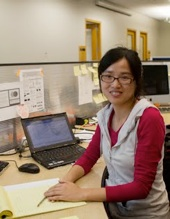
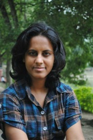
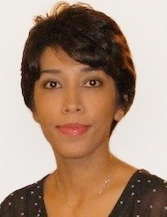
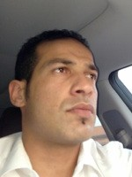
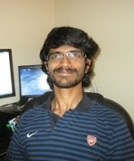

Linwei Wang |
Professor Wang is directing the Computational Biomedicine Laboratory. She is currently a faculty member in the Ph.D. Program of Computing and Information Sciences at the Rochester Institute of Technology. Wang received her Ph.D. in Computing and Information Sciences at RIT in 2009. Previously, she attended the Hong Kong University of Sciences and Technology, where she obtained a Master of Philosophy (M.Phil) in Electronic and Computer Engineering in 2007, and Zhejiang University, Hangzhou, China where she earned her Bachelor degree in Optic-Electronic Information Engineering in 2005. Professor Wang is also recipient of NSF CAREER Award. For more information, please visit her homepage. |
 Jingjia |
Jingjia's research focuses on the integration of dynamic models and spatial low-dimensional structural models in regularizing the understanding of data.
On top of her productive publication record in IEEE TMI, CVPR, MICCAI, etc, Jingjia was also one of the three finalist for GREAT AWARD of Digital Rochester in Student Achievement
Award, the recipient of the Student Travel Award for MICCAI 2014, the Grace Hopper Celebration Scholarship Grant 2014, and several more awards and scholarships from within RIT.
For more information, please visit her homepage. Jingjia has worked at the CBL since 2011. |
 Jwala Dhamala |
Jwala's research interest centers around the data inversion of complex physical systems through parameter estimation.
For more information, please visit her homepage. Jwala has worked at the CBL since 2014. |
 Azar Rahimi |
Azar's research focuses on the sensitivity of inverse problems to model assumptions and uncertainties,
including uncertainties in the input models constructed from data and assumptions on the regularization models. Azar’s record
of awards include the Best Paper Award from ISBI 2014, the Gordon K. Moe Young Investigator Award from UNYCES 2014, and the
Howard Hughes Medical Institute Med-into-Grad Fellowship
in Cardiovascular Science.
Azar worked at the CBL from 2010 - 2015. |
Sandesh Ghimire |
Sandesh's potential research direction will center around joint electro-mechanic analysis of the heart combining multiple data modalities
including ECG and tomographic scans. Sandesh will start work at the CBL in the Fall of 2015. |
 Omar Gharbia |
Omar's potential research direction will center around experimental validation, clinical application, and methodological improvement of TEPI
in various cardiac diseases Sandesh will start work at the CBL in the Summer of 2015. |
Junyan Wang |
Junyan's work was funded by a collaboration grant with Dr. Sai-Kit Yeung’s
Vision, Graphics, and Computational Design (VGD) Group at the Singapore University of Technology and Design (SUTD). He worked with both the CBL and VGD
in contributing robust and automatic segmentation and registration methods as an essential component to the system development of TEPI
for future clinical translation. For more information, please visit his homepage. Junyan was a visiting post-doc. |
 Vishwanath Raman |
Vishwanath is doing his thesis project in the CBL. He aims to investigate the use of machine learning techniques in predicting ablation
targets, a technique that has the potential to provide better pre-procedural planning of catheter ablation. Vishwanath is studying Computer Science at RIT and has worked at the CBL since 2014. |
Shuhang Chen |
Shuhang’s research focuses on the development of new learning models for ECG and medical image data, with a focus on multi-task learning
and domain-invariant factors. Shuhang is studying at Zhejiang University and has worked at the CBL since 2014. |
Roland Sanford |
Roland is a research assistant at the CBL. He aims to develop and apply computational electrical imaging
techniques in an effort to study atrial arrhythmias, including atrial flutter and atrial fibrillation. Roland also maintains the group's website.
For more information, please visit his GitHub. Roland is studying Physics and Computational Mathematics at RIT and has worked at the CBL since 2015. |
Dakota Williams |
Dakota is a research assistant at the CBL. He aims to optimize and develop software packages for both the fundamental inference algorithms on
CUDA and domain-related data processing toolkit. For more information, please visit his GitHub. Dakota is studying Computer Science at RIT and has worked at the CBL since 2014. |